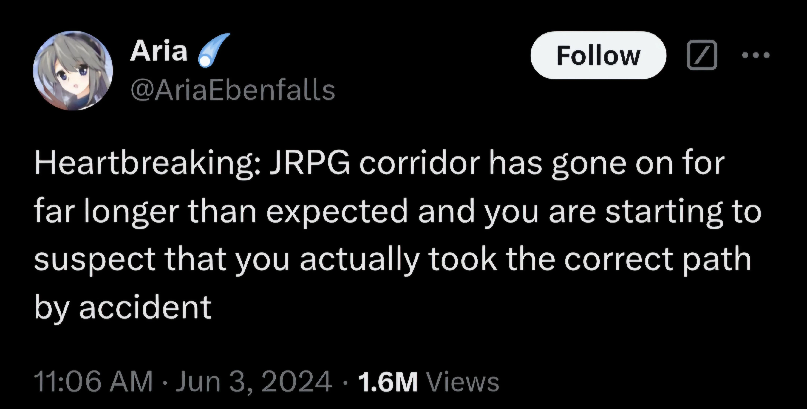

Идти туда, знаю не куда
В любой игре с хотя бы минимальной свободой передвижения всегда надо идти туда, куда не надо идти.
Влево показывает квестовый маркер? Значит, там катсцена и прохождение по сюжету, а справа, значит, лут, надо сначала туда, а потом влево. Подземелье в Скайриме? Длинный коридор с ответвлениями; для полного исследования эффективнее идти в ответвления сначала, а в общий коридор потом. Необязательные аспекты могут быть закрыты навсегда, а обязательные всегда останутся, они буквально так называются, поэтому надо сначала посещать необязательные. Основной квест от тебя никуда не убежит, а побочные надо еще сначала найти, и их можно пропустить. Пройти весь данж, а потом бектрекать и искать то, что пропустил, неудобно, надо искать все сразу. Прогрессия по главному квесту скалируется с расчетом на то, что ты будешь вкачиваться на побочках, поэтому чтобы максимально облегчить себе задачу, надо откладывать главный как можно дольше и качаться на побочках.

Это убивает иммерсию. Я чувствую себя не персонажем, который пытается достигнуть цели, а именно игроком-оптимизатором. Что ухудшается тем, что наиболее часто этот троп работает в RPG, где иммерсия важнее всего.
Мой опыт это сессионные PvP-игры, у меня нет профишенси в разработке исследовательских синглов. Поэтому сейчас, возможно, пойдет профанация.
Но как этот момент решается?
Мор. Утопия; Sunless Sea; Fear and Hunger
Решается максимальным лимитированием ресурсов. В случае “Мора” это время, в случае “F&H” – голод и тайминги, в Sunless Sea это еда и топливо. Ты физически не можешь исследовать все. Надо приоритизировать. И более важные вещи приоритизировать важнее, ходить собирать все ответвления позволить себе ты не можешь. Требует реиграбельности – игрок не может исследовать все за один заход, но он все равно хочет исследовать все.
Daggerfall; Minecraft; Mount and Blade
Решается тем, что мир однородный, и один и тот же контент можно найти где угодно. Если ты в майнкрафте не исследовал ответвление пещеры и не откопал там алмазов, не беда, в соседней пещере алмазы такие же. Если в даггерфоле ты пропустил целый кусок подземелья, пусть, может ты пропустишь немного лута, но в других местах этот же лут найти все равно можно. По сути, ты получаешь один и тот же контент, куда бы ты ни шел и что бы ты ни делал, поэтому выбирать, куда идти, вообще не обязательно. Можно фриформить и действовать на интуиции. Многим такое нравится, хотя мне лично такая механика кажется обесцениванием открытого мира; тот же даггерфол для меня читается не как RPG, а как Dungeon Crawler с сюжетом.
Vampire the Masquerade: Bloodlines; Chrono Trigger; Legend of Legaia
Фриформ “кусочный”. У тебя есть очень четкое разделение по уровням, и открытый мир есть только в рамках каждого куска отдельно. Ты сразу, с самого начала видишь на горизонте выход из уровня и знаешь, где именно и что исследовать прежде чем идти дальше. Игра расчитывает, что ты исследуешь все. Это не решает проблему полностью, но слегка ее смягчает – налажать совсем нельзя.
Morrowind; Fallout; Kingdom Come: Deliverance
Мир массивный и нелинейный, так что куда надо идти, в общем-то, неочевидно. В отличие от подземелий Скайрима, подземелья Морровинда не поддаются систематизированному прохождению, ты просто бродишь где попало, пока не достигаешь цели. И поэтому вопроса “исследовать все” вообще не стоит при первых прохождениях. Когда я пришла в город Вивек, у меня даже мысли не возникло попытаться проверить каждую дверь и каждый магазин. И так понятно, что все не исследую. Просто шла, куда велит сердце и квест, и везде нахожу что-то новое и интересное. Игры настолько большие, что к тому моменту как начинает хотеться их полностью исследовать и зайти в каждый уголок, “медовый месяц” уже закончен, иммерсия не так важна, и ничего от того, что игрок переключается на механ и подсматривает в вики, нет.
Есть ли еще методы?
 Ответить по почте
Ответить по почте Оставить анонимный комментарий
Оставить анонимный комментарий